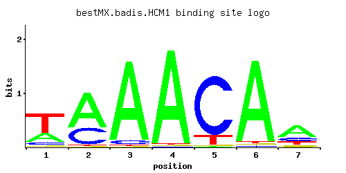

HCM1
YCR065W
Forkhead transcription factor that drives S-phase specific expression of genes involved in chromosome segregation, spindle dynamics, and budding; suppressor of calmodulin mutants with specific SPB assembly defects; telomere maintenance role
Best-performing DNA-binding model.

View and copy the recommended matrices ↘
A | 0.27 0.66 0.93 0.97 0.01 0.94 0.58 C | 0.08 0.32 0.05 0.01 0.85 0.02 0.17 G | 0.04 0.01 0.01 0.01 0.01 0.02 0.11 T | 0.61 0.01 0.01 0.01 0.13 0.02 0.14
A | 27 66 93 97 1 94 57 C | 8 32 5 1 85 2 17 G | 4 1 1 1 1 2 11 T | 61 1 1 1 13 2 14
A | -0.17 0.72 1.07 1.11 -3.47 1.08 0.59 C | -0.81 0.58 -1.28 -2.89 1.55 -2.20 -0.06 G | -1.50 -2.89 -2.89 -2.89 -2.89 -2.20 -0.49 T | 0.65 -3.47 -3.47 -3.47 -0.90 -2.77 -0.83
Alternative candidate matrices 0
Historical matrix candidates from the original ScerTF database. Expand a source to inspect its original logo, scores, and matrix values.
No additional matrices in the original archive.
Gene-level annotations and interactions.
Genes bound in ChIP-chip experiments 1 genes
No Data
Genes affected by TF deletion 43 genes
YPL053C, YDR371W, YDR217C, YGL042C, YKL048C, YPL016W, YLL034C, YML085C, YBR093C, YNL116W, YPL269W, YDL187C, YMR173W, YOR043W, YJR148W, YDR199W, YDR227W, YLR099C, YBR265W, YPL092W, YFL014W, YLR004C, YBL032W, YLR290C, YLR231C, YNL068C, YMR173W-A, YNL126W, YOL095C, YNR009W, YNR044W, YLR455W, YPL013C, YMR003W, YDL117W, YMR215W, YGR051C, YPR006C, YIL074C, YNR018W, YPL168W, YNL013C, YPL107W
Predicted TF–TF partners 1 genes
FKH2